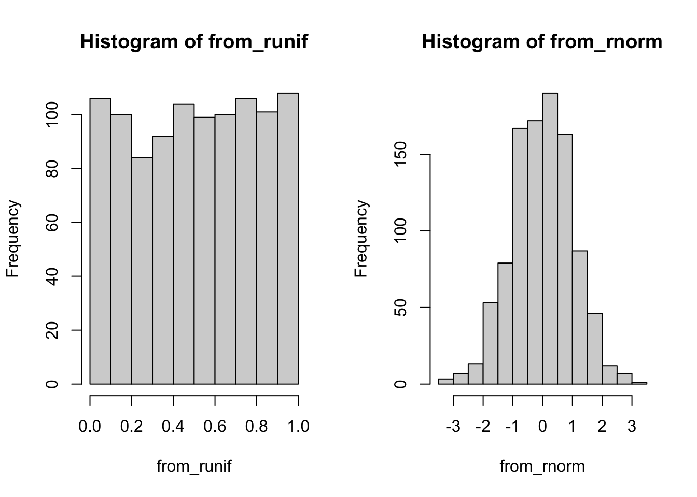

Chapter 5 Simulation13
Motivation: Simulation as an Analytical Tool
An increasing amount of political science contributions now include a simulation.
- Axelrod (1977) demonstrated via simulation how atomized individuals evolve to be grouped in similar clusters or countries, a model of culture.14
- Chen and Rodden (2013) argued in a 2013 article that the vote-seat inequality in U.S. elections that is often attributed to intentional partisan gerrymandering can actually attributed to simply the reality of “human geography” – Democratic voters tend to be concentrated in smaller area. Put another way, no feasible form of gerrymandering could spread out Democratic voters in such a way to equalize their vote-seat translation effectiveness. After demonstrating the empirical pattern of human geography, they advance their key claim by simulating thousands of redistricting plans and record the vote-seat ratio.15
- Gary King, James Honaker, and multiple other authors propose a way to analyze missing data with a method of multiple imputation, which uses a lot of simulation from a researcher’s observed dataset.16 (Software: Amelia17)
Statistical methods also incorporate simulation:
- The bootstrap: a statistical method for estimating uncertainty around some parameter by re-sampling observations.
- Bagging: a method for improving machine learning predictions by re-sampling observations, storing the estimate across many re-samples, and averaging these estimates to form the final estimate. A variance reduction technique.
- Statistical reasoning: if you are trying to understand a quantitative problem, a wonderful first-step to understand the problem better is to simulate it! The analytical solution is often very hard (or impossible), but the simulation is often much easier :-)
Where are we? Where are we headed?
Up till now, you should have covered:
Rbasics- Visualization
- Matrices and vectors
- Functions, objects, loops
- Joining real data
In this module, we will start to work with generating data within R, from thin air, as it were. Doing simulation also strengthens your understanding of Probability (Section @ref{probability}).
Check your Understanding
- What does the
sample()function do? - What does
runif()stand for? - What is a
seed? - What is a Monte Carlo?
Check if you have an idea of how you might code the following tasks:
- Simulate 100 rolls of a die
- Simulate one random ordering of 25 numbers
- Simulate 100 values of white noise (uniform random variables)
- Generate a “bootstrap” sample of an existing dataset
We’re going to learn about this today!
5.2 The sample() function
The core functions for coding up stochastic data revolves around several key functions, so we will simply review them here.
Suppose you have a vector of values x and from it you want to randomly sample a sample of length size. For this, use the sample function
## [1] 4 2 8 9 10There are two subtypes of sampling – with and without replacement.
- Sampling without replacement (
replace = FALSE) means once an element ofxis chosen, it will not be considered again:
## [1] 10 9 3 4 8 6 2 5 1 7- Sampling with replacement (
replace = TRUE) means that even if an element ofxis chosen, it is put back in the pool and may be chosen again.
## [1] 8 3 3 2 2 7 6 6 8 4It follows then that you cannot sample without replacement a sample that is larger than the pool.
## Error in sample.int(length(x), size, replace, prob): cannot take a sample larger than the population when 'replace = FALSE'So far, every element in x has had an equal probability of being chosen. In some application, we want a sampling scheme where some elements are more likely to be chosen than others. The argument prob handles this.
For example, this simulates 20 fair coin tosses (each outcome is equally likely to happen)
## [1] "Head" "Head" "Tail" "Head" "Head" "Tail" "Head" "Tail" "Head" "Tail"
## [11] "Head" "Head" "Head" "Head" "Head" "Head" "Head" "Tail" "Tail" "Head"But this simulates 20 biased coin tosses, where say the probability of Tails is 4 times more likely than the number of Heads
## [1] "Tail" "Tail" "Tail" "Tail" "Tail" "Tail" "Tail" "Tail" "Tail" "Head"
## [11] "Head" "Head" "Head" "Tail" "Head" "Tail" "Tail" "Tail" "Head" "Tail"5.2.1 Sampling rows from a dataframe
In tidyverse, there is a convenience function to sample rows randomly: sample_n() and sample_frac().
For example, load the dataset on cars, mtcars, which has 32 observations.
## mpg cyl disp hp drat wt qsec vs am gear carb
## Mazda RX4 21.0 6 160.0 110 3.90 2.620 16.46 0 1 4 4
## Mazda RX4 Wag 21.0 6 160.0 110 3.90 2.875 17.02 0 1 4 4
## Datsun 710 22.8 4 108.0 93 3.85 2.320 18.61 1 1 4 1
## Hornet 4 Drive 21.4 6 258.0 110 3.08 3.215 19.44 1 0 3 1
## Hornet Sportabout 18.7 8 360.0 175 3.15 3.440 17.02 0 0 3 2
## Valiant 18.1 6 225.0 105 2.76 3.460 20.22 1 0 3 1
## Duster 360 14.3 8 360.0 245 3.21 3.570 15.84 0 0 3 4
## Merc 240D 24.4 4 146.7 62 3.69 3.190 20.00 1 0 4 2
## Merc 230 22.8 4 140.8 95 3.92 3.150 22.90 1 0 4 2
## Merc 280 19.2 6 167.6 123 3.92 3.440 18.30 1 0 4 4
## Merc 280C 17.8 6 167.6 123 3.92 3.440 18.90 1 0 4 4
## Merc 450SE 16.4 8 275.8 180 3.07 4.070 17.40 0 0 3 3
## Merc 450SL 17.3 8 275.8 180 3.07 3.730 17.60 0 0 3 3
## Merc 450SLC 15.2 8 275.8 180 3.07 3.780 18.00 0 0 3 3
## Cadillac Fleetwood 10.4 8 472.0 205 2.93 5.250 17.98 0 0 3 4
## Lincoln Continental 10.4 8 460.0 215 3.00 5.424 17.82 0 0 3 4
## Chrysler Imperial 14.7 8 440.0 230 3.23 5.345 17.42 0 0 3 4
## Fiat 128 32.4 4 78.7 66 4.08 2.200 19.47 1 1 4 1
## Honda Civic 30.4 4 75.7 52 4.93 1.615 18.52 1 1 4 2
## Toyota Corolla 33.9 4 71.1 65 4.22 1.835 19.90 1 1 4 1
## Toyota Corona 21.5 4 120.1 97 3.70 2.465 20.01 1 0 3 1
## Dodge Challenger 15.5 8 318.0 150 2.76 3.520 16.87 0 0 3 2
## AMC Javelin 15.2 8 304.0 150 3.15 3.435 17.30 0 0 3 2
## Camaro Z28 13.3 8 350.0 245 3.73 3.840 15.41 0 0 3 4
## Pontiac Firebird 19.2 8 400.0 175 3.08 3.845 17.05 0 0 3 2
## Fiat X1-9 27.3 4 79.0 66 4.08 1.935 18.90 1 1 4 1
## Porsche 914-2 26.0 4 120.3 91 4.43 2.140 16.70 0 1 5 2
## Lotus Europa 30.4 4 95.1 113 3.77 1.513 16.90 1 1 5 2
## Ford Pantera L 15.8 8 351.0 264 4.22 3.170 14.50 0 1 5 4
## Ferrari Dino 19.7 6 145.0 175 3.62 2.770 15.50 0 1 5 6
## Maserati Bora 15.0 8 301.0 335 3.54 3.570 14.60 0 1 5 8
## Volvo 142E 21.4 4 121.0 109 4.11 2.780 18.60 1 1 4 2sample_n picks a user-specified number of rows from the dataset:
## mpg cyl disp hp drat wt qsec vs am gear carb
## Porsche 914-2 26.0 4 120.3 91 4.43 2.140 16.70 0 1 5 2
## Hornet 4 Drive 21.4 6 258.0 110 3.08 3.215 19.44 1 0 3 1
## Fiat X1-9 27.3 4 79.0 66 4.08 1.935 18.90 1 1 4 1Sometimes you want a X percent sample of your dataset. In this case use sample_frac()
## mpg cyl disp hp drat wt qsec vs am gear carb
## Fiat X1-9 27.3 4 79.0 66 4.08 1.935 18.90 1 1 4 1
## Datsun 710 22.8 4 108.0 93 3.85 2.320 18.61 1 1 4 1
## Merc 450SLC 15.2 8 275.8 180 3.07 3.780 18.00 0 0 3 3As a side-note, these functions have very practical uses for any type of data analysis:
- Inspecting your dataset: using
head()all the same time and looking over the first few rows might lead you to ignore any issues that end up in the bottom for whatever reason. - Testing your analysis with a small sample: If running analyses on a dataset takes more than a handful of seconds, change your dataset upstream to a fraction of the size so the rest of the code runs in less than a second. Once verifying your analysis code runs, then re-do it with your full dataset (by simply removing the
sample_n/sample_fracline of code in the beginning). While three seconds may not sound like much, they accumulate and eat up time.
5.3 Random numbers from specific distributions
rbinom()
rbinom builds upon sample as a tool to help you answer the question – what is the total number of successes I would get if I sampled a binary (Bernoulli) result from a test with size number of trials each, with a event-wise probability of prob. The first argument n asks me how many such numbers I want.
For example, I want to know how many Heads I would get if I flipped a fair coin 100 times.
## [1] 49Now imagine this I wanted to do this experiment 10 times, which would require I flip the coin 10 x 100 = 1000 times! Helpfully, we can do this in one line
## [1] 42 47 54 46 50 44 51 50 51 45runif()
runif also simulates a stochastic scheme where each event has equal probability of getting chosen like sample, but is a continuous rather than discrete system. We will cover this more in the next math module.
The intuition to emphasize here is that one can generate potentially infinite amounts (size n) of noise that is a essentially random
## [1] 0.1097412 0.9292395 0.3095468 0.7333913 0.3997090rnorm()
rnorm is also a continuous distribution, but draws from a Normal distribution – perhaps the most important distribution in statistics. It runs the same way as runif
## [1] -1.4822125 -0.1380801 0.4746995 0.2520717 -0.6706818To better visualize the difference between the output of runif and rnorm, let’s generate lots of each and plot a histogram.
from_runif <- runif(n = 1000)
from_rnorm <- rnorm(n = 1000)
par(mfrow = c(1, 2)) ## base-R parameter for two plots at once
hist(from_runif)
hist(from_rnorm)
5.4 r, p, and d
Each distribution can do more than generate random numbers (the prefix r). We can compute the cumulative probability by the function pbinom(), punif(), and pnorm(). Also the density – the value of the PDF – by dbinom(), dunif() and dnorm().
5.5 set.seed()
R doesn’t have the ability to generate truly random numbers! Random numbers are actually very hard to generate. (Think: flipping a coin –> can be perfectly predicted if I know wind speed, the angle the coin is flipped, etc.). Some people use random noise in the atmosphere or random behavior in quantum systems to generate “truly” (?) random numbers. Conversely, R uses deterministic algorithms which take as an input a “seed” and which then perform a series of operations to generate a sequence of random-seeming numbers (that is, numbers whose sequence is sufficiently hard to predict).
Let’s think about this another way. Sampling is a stochastic process, so every time you run sample() or runif() you are bound to get a different output (because different random seeds are used). This is intentional in some cases but you might want to avoid it in others. For example, you might want to diagnose a coding discrepancy by setting the random number generator to give the same number each time. To do this, use the function set.seed().
In the function goes any number. When you run a sample function in the same command as a preceding set.seed(), the sampling function will always give you the same sequence of numbers. In a sense, the sampler is no longer random (in the sense of unpredictable to use; remember: it never was “truly” random in the first place)
## [1] 0.51236144 0.61530551 0.37451441 0.43541258 0.21166530 0.17812129
## [7] 0.04420775 0.45567854 0.88718264 0.06970056The random number generator should give you the exact same sequence of numbers if you precede the function by the same seed,
## [1] 0.51236144 0.61530551 0.37451441 0.43541258 0.21166530 0.17812129
## [7] 0.04420775 0.45567854 0.88718264 0.06970056Exercises
Census Sampling
What can we learn from surveys of populations, and how wrong do we get if our sampling is biased?18 Suppose we want to estimate the proportion of U.S. residents who are non-white (race != "White"). In reality, we do not have any population dataset to utilize and so we only see the sample survey. Here, however, to understand how sampling works, let’s conveniently use the Census extract in some cases and pretend we didn’t in others.
First, load
usc2010_001percent.csvinto your R session. After loading thelibrary(tidyverse), browse it. Although this is only a 0.01 percent extract, treat this as your population for pedagogical purposes. What is the population proportion of non-White residents?Setting a seed to
1669482, sample 100 respondents from this sample. What is the proportion of non-White residents in this particular sample? By how many percentage points are you off from (what we labelled as) the true proportion?Now imagine what you did above was one survey. What would we get if we did 20 surveys?
To simulate this, write a loop that does the same exercise 20 times, each time computing a sample proportion. Use the same seed at the top, but be careful to position the set.seed function such that it generates the same sequence of 20 samples, rather than 20 of the same sample.
Try doing this with a for loop and storing your sample proportions in a new length-20 vector. (Suggestion: make an empty vector first as a container). After running the loop, show a histogram of the 20 values. Also what is the average of the 20 sample estimates?
- Now, to make things more real, let’s introduce some response bias. The goal here is not to correct response bias but to induce it and see how it affects our estimates. Suppose that non-White residents are 10 percent less likely to respond to enter your survey than White respondents. This is plausible if you think that the Census is from 2010 but you are polling in 2018, and racial minorities are more geographically mobile than Whites. Repeat the same exercise in (c) by modeling this behavior.
You can do this by creating a variable, e.g. propensity, that is 0.9 for non-Whites and 1 otherwise. Then, you can refer to it in the propensity argument.
Finally, we want to see if more data (“Big Data”) will improve our estimates. Using the same unequal response rates framework as (d), repeat the same exercise but instead of each poll collecting 100 responses, we collect 10,000.
Optional - visualize your 2 pairs of 20 estimates, with a bar showing the “correct” population average.
Conditional Proportions
This example is not on simulation, but is meant to reinforce some of the probability discussion from math lecture.
Read in the Upshot Siena poll from Fall 2016, data/input/upshot-siena-polls.csv.
In addition to some standard demographic questions, we will focus on one called vt_pres_2 in the csv. This is a two-way presidential vote question, asking respondents who they plan to vote for President if the election were held today – Donald Trump, the Republican, or Hilary Clinton, the Democrat, with options for Other candidates as well. For this problem, use the two-way vote question rather than the 4-way vote question.
Drop the the respondents who answered the November poll (i.e. those for which
poll == "November"). We do this in order to ignore this November population in all subsequent parts of this question because they were not asked the Presidential vote question.Using the dataset after the procedure in (a), find the proportion of poll respondents (those who are in the sample) who support Donald Trump.
Among those who supported Donald Trump, what proportion of them has a Bachelor’s degree or higher (i.e. have a Bachelor’s, Graduate, or other Professional Degree)?
Among those who did not support Donald Trump (i.e. including supporters of Hilary Clinton, another candidate, or those who refused to answer the question), what proportion of them has a Bachelor’s degree or higher?
Express the numbers in the previous parts as probabilities of specified events. Define your own symbols: For example, we can let \(T\) be the event that a randomly selected respondent in the poll supports Donald Trump, then the proportion in part (b) is the probability \(P(T).\)
Suppose we randomly sampled a person who participated in the survey and found that he/she had a Bachelor’s degree or higher. Given this evidence, what is the probability that the same person supports Donald Trump? Use Bayes Rule and show your work – that is, do not use data or R to compute the quantity directly. Then, verify this is the case via R.
The Birthday problem
Write code that will answer the well-known birthday problem via simulation.19
The problem is fairly simple: Suppose \(k\) people gather together in a room. What is the probability at least two people share the same birthday?
To simplify reality a bit, assume that (1) there are no leap years, and so there are always 365 days in a year, and (2) a given individual’s birthday is randomly assigned and independent from each other.
Step 1: Set k to a concrete number. Pick a number from 1 to 365 randomly, k times to simulate birthdays (would this be with replacement or without?).
Step 2: Write a line (or two) of code that gives a TRUE or FALSE statement of whether or not at least two people share the same birth date.
Step 3: The above steps will generate a TRUE or FALSE answer for your event of interest, but only for one realization of an event in the sample space. In order to estimate the probability of your event happening, we need a “stochastic”, as opposed to “deterministic”, method. To do this, write a loop that does Steps 1 and 2 repeatedly for many times, call that number of times sims. For each of sims iteration, your code should give you a TRUE or FALSE answer. Code up a way to store these estimates.
Step 4: Finally, generalize the function further by letting k be a user-defined number. You have now created a Monte Carlo simulation!
Step 5: Generate a table or plot that shows how the probability of sharing a birthday changes by k (fixing sims at a large number like 1000). Also generate a similar plot that shows how the probability of sharing a birthday changes by sims (fixing k at some arbitrary number like 10).
Extra credit: Give an “analytical” answer to this problem, that is an answer through deriving the mathematical expressions of the probability.
Module originally written by Connor Jerzak and Shiro Kuriwaki↩︎
Axelrod, Robert. 1997. “The Dissemination of Culture.” Journal of Conflict Resolution 41(2): 203–26.↩︎
Chen, Jowei, and Jonathan Rodden. “Unintentional Gerrymandering: Political Geography and Electoral Bias in Legislatures. Quarterly Journal of Political Science, 8:239-269”↩︎
King, Gary, et al. “Analyzing Incomplete Political Science Data: An Alternative Algorithm for Multiple Imputation”. American Political Science Review, 95: 49-69.↩︎
James Honaker, Gary King, Matthew Blackwell (2011). Amelia II: A Program for Missing Data. Journal of Statistical Software, 45(7), 1-47.↩︎
This example is inspired from Meng, Xiao-Li (2018). Statistical paradises and paradoxes in big data (I): Law of large populations, big data paradox, and the 2016 US presidential election. Annals of Applied Statistics 12:2, 685–726. doi:10.1214/18-AOAS1161SF.↩︎
This exercise draws from Imai (2017)↩︎